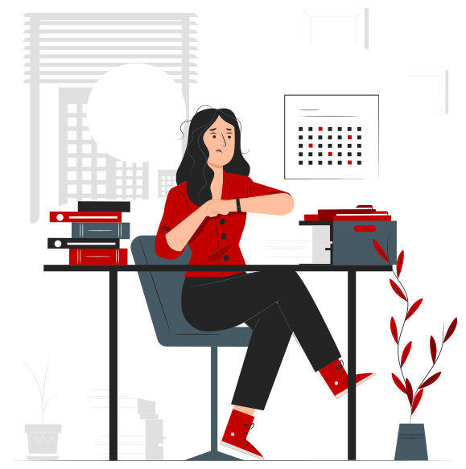
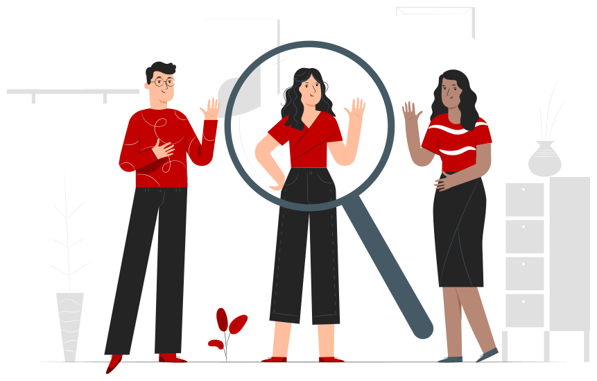
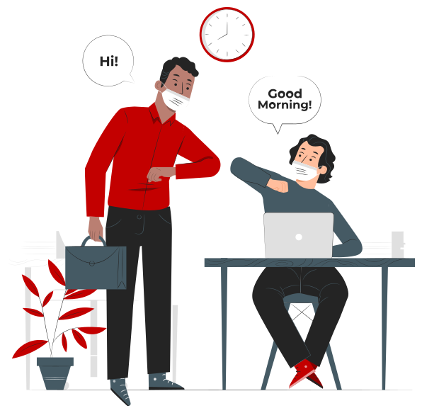

Module 2 · Psychological First Aid in the Workplace
Why we talk about
mental health
at work
Work can protect or weaken mental health. Why this matters, and what a club like Benfica can do.
CC Captions not available in this demo version.
1.1 · Video
Prevalence of mental health problems in Portugal
- Portugal has a high prevalence of anxiety and depression among the adult population.
- Many cases do not receive adequate clinical or psychological support.
- Psychological distress is often invisible and unrecognised.
- Work can act as a protective factor or a risk factor for mental health.
- The way work is organised directly affects wellbeing.
CC Captions not available in this demo version.
1.2 · Video
Mental health and wellbeing
- Mental health is the ability to cope with challenges, to work and to contribute to the community.
- Wellbeing involves emotional balance, satisfaction and a sense of purpose.
- At work, it translates into feeling valued, safe and competent.
- Mental health is dynamic and varies over time and with context.
- The work context directly influences mental health.
CC Captions not available in this demo version.
1.3 · Video
The role of organisations in promoting mental health
- Organisations have a central role in promoting their employees’ mental health.
- The workplace is often where signs of psychological distress first appear.
- Attentive environments make it possible to identify and respond to distress earlier.
- Prevention, through healthy organisational cultures, is essential.
- Environments with respect, fairness, support and balance promote wellbeing and performance.
Practical example · 1 of 3
The same workload, two contexts
In each example, the same kind of demand can protect or weaken mental health. The difference lies in how the context responds.

Ana and Rita work at the public front desk of the Estádio da Luz during a big-match week: the same workload, the same deadline, the same crowd at the door.She has the autonomy to organise her shift, feels that her effort is recognised and knows she can ask for help. At the end of the match she is tired, but with a sense of a job well done.
She works under constant pressure, with no room for decisions and afraid of making a mistake in front of thousands of people. The same tiredness turns into exhaustion.
The differenceThe demand is similar. What changes is autonomy, support and recognition.
Practical example · 2 of 3
The sign that goes unnoticed

A usually outgoing employee starts to withdraw, misses meetings and answers irritably.The line manager notices the change, approaches without judging and makes room to talk. The distress is recognised in time.
The same behaviour is read as “lack of commitment”. The distress stays invisible and gets worse.
The differenceThe first signs of distress often appear at work. Recognising them depends on someone being attentive.
Practical example · 3 of 3
Coming back after a difficult period

After sick leave for mental health reasons, an employee returns to the team.With listening, gradual adjustment of tasks and no stigma, the reintegration goes well and builds confidence.
As if nothing had happened, the person feels exposed and the risk of relapse increases.
The differenceCaring for mental health is not just avoiding the crisis. It means supporting people before, during and after.
Key idea
Work can protect or weaken mental health. The difference is rarely in the task itself, but in the autonomy, support, recognition and attention that the organisation gives people.
- Autonomy
- Support
- Recognition
- Attention